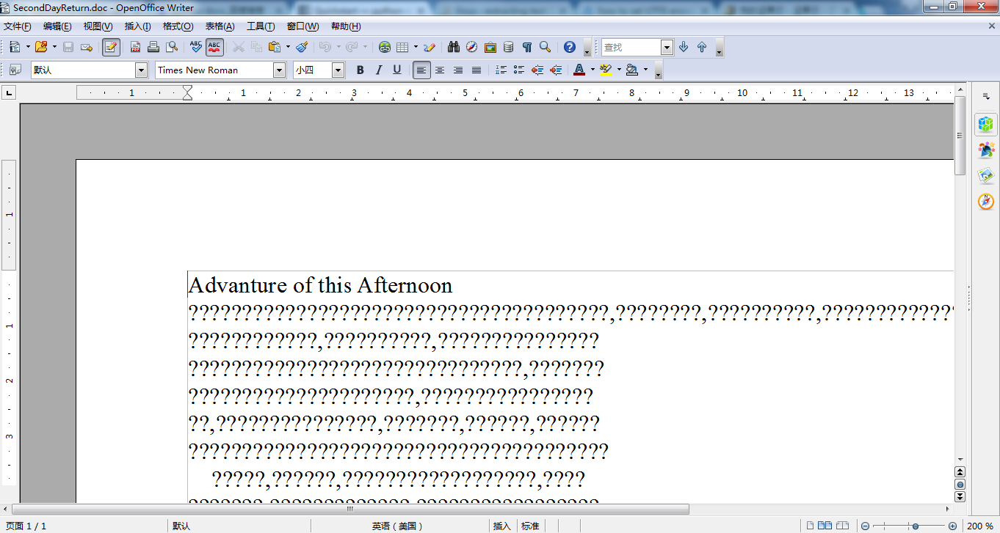

Advanture of Afternoon
在开始正式重写之前先回顾一下Apache OpenOffice的文件恢复功能，在完成这篇记述快90%的情况下由于 Office被电脑强行关闭，致使后40%可能无法恢复。OpenOffice是有自动恢复功能的，不过好像从来没成功过。 而且，尽管我写到50%时保存了一下，由于OpenOffice闪退，再次打开中文全都变成了问号。不过英文是正常的， 根据我个人的电脑经验和实际的验证，我得出了一个结论：恢复1%也是不可能的。第二个结论是OpenOffice果然是 西方人做的，尽管在中国的志愿者的帮助下已经汉化了（图2），由于自己比较懒，没下载一个微软的private office使用， 导致如此严重的问题，所以需要用一段话来写出来，同时与下一段话形成鲜明对比。
下午睡醒后，骑车子到了一个叫静斋的地方，去见一个之前从来没见过面的黄老师，本以为静斋是个人文社科搞研究 的地方，进去后才发现好像是搞数学的，准确的说是黄老师告诉我这里是数学中心的一部分，另一部分和这里曲线距离1km 左右，丘先生虽然很厉害，但学校毕竟土地资源有限，也找不出很大的房子可以把很多很多教授学者博士生挤在一处。不过学校已经开始规划要这样做了。 黄老师果然是从校长办公室空降到数学中心的领导，大事小事都知道，小事就是她把我叫来。而我果然只是这里的小学生，只是知道自己学过哪些课， 连数学系和数学中心的关系也不清楚。
黄老师之所以空降过来当行政领导，据她介绍是因为丘先生常年在外，之前丘先生推荐的人选又不胜任，所以学校 把这个棘手的任务交给了黄老师。看黄老师势头是要大大整顿一番的样子，黄老师来之前，群龙无首，可以想象行政工作 人员的状态，秘书们互相说对方负责这方面的工作，连保洁的都不好好干活，很脏的地毯被黄老师发现了，后果可能是会被炒鱿鱼。
我被叫来是因为黄老师想在数学中心的网站方面既要大干一场又要节省开支，所以一方面从本系找一个网管，另一方面从 计算机系找人改造网站。不过我很好奇黄老师在说完IT的事情竟然说我可以再呆一会旁听一下行政工作会议。我这个管理盲 可能漏掉了许多细节，也许在无法恢复的文档中详细地记述了黄老师如何在行政办公处搬家一事上施展可以和王熙凤相提 并论的才能，当然，这也取决于丫环是否能高质量的完成任务。
根据我的观察，文秘的年龄比我大不了多少，今天值班的有两个人，不知道算倒霉还是幸运临时被黄老师拉过来开会 ，开完会统计家具清单，折腾得比平常下班时间还晚。本来按时值班就可以了，黄老师也没来多久，不知是专挑刺呢还是 确实有问题呢在开会前历数文秘怠工的10大表现，如“有的人竟然正式上班前一天晚上才回到北京，哪有正式上班了再 考虑搬家的？”“我真不知道我们中心为什么需要3个财务员，校内其他大一点的单位最多也只有两个，真不知道之前你们的 工作是怎么分配的。”“每个校内下属单位年终必须上报预算和决算，然而数学中心一次都没交过，上面也懒得去找，找了你们也只会互相推诿。”
我的业务能力太差了，无法理解黄老师为什么不等人来齐了再开批评大会。
黄老师一提起丘先生总是无比地尊敬，丘先生办公室就在楼上，清点家具时我跟着进去了，发现里边一尘不染，后来进了另一间 教授的办公室发现茶杯底已经长毛了。同样都是好几个月没来过的教授了。下图是我在丘先生办公室偷拍的书架掠影：